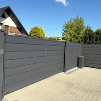
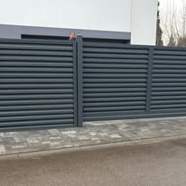
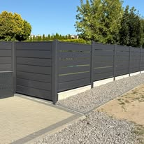
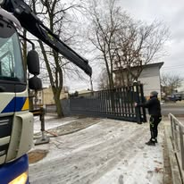
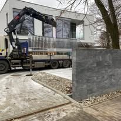

OSC OgrodzeniaKlasyczne i nowoczesne ogrodzenia

Wybrane zdjęcia z publicznych materiałów OSC na Facebooku: ogrodzenia posesyjne, gotowe fronty i prace montażowe.
Galeria pokazuje materiały publicznie dostępne na profilu firmy. Bez dopisywania fikcyjnych lokalizacji i bez sztucznych zdjęć.






Wyślij zdjęcie domu lub wjazdu. Łatwiej będzie omówić wzór i układ.